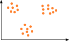
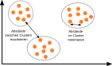
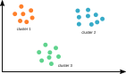
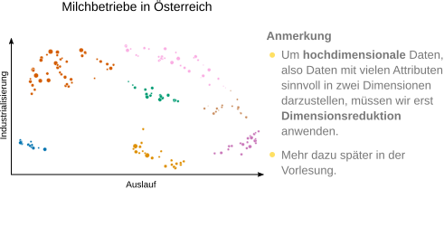
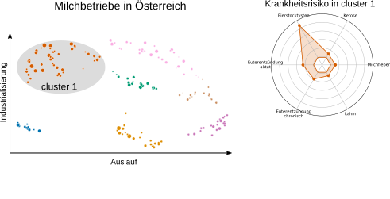
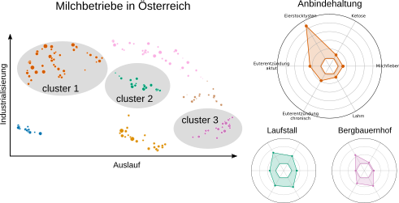

Vorlesung 3: unüberwachtes Lernen
(unsupervised learning)
(unsupervised learning)


Rückblick Vorlesung 2
- Frage: Wie können wir messen, wie gut ein Algorithmus des überwachten Lernens funktioniert?
Antwort: Für Klassifikation verwenden wir die Genauigkeit (Anteil korrekter Vorhersagen) oder den F1 Score (harmonisches Mittel aus pos. Vorhersagewert und Sensitivität). Für Regression verwenden wir die Wurzel aus der mittleren quadrierten Abweichung. - Frage: Was ist Bias (underfitting) und Varianz (overfitting)?
Antwort: Bias: eine systematische Abweichung der Modellvorhersagen vom wahren Wert. Varianz: eine Streuung von Vorhersagen für ähnliche Eingabewerte. - Frage: Welche Datentypen gibt es und welche Probleme können mit Daten auftreten?
Antwort: Datentypen: diskrete und Kontinuierliche Zahlen, Klassen, Bilder, Text, Zeitserien. Probleme: fehlende Daten, Ausreißer, "verbotene" Werte.
Überblick über die heutige Vorlesung
- Einführung unüberwachtes Lernen
- Distanzmaße
- Dimensionsreduktion
- Algorithmen für unüberwachtes Lernen
- Bestärkendes Lernen
K. Backhaus et al., Multivariate Analysemethoden, Kapitel 8, Seiten 435-497.
C. M. Bishop, Pattern Recognition and Machine Learning, Kapitel 9, Seiten 423-430.
A step-by-step look at Alpha Zero
and Monte Carlo Tree Search
[Weiterführende Lektüre]
Lernziele
- Anwendungsgebiete von unüberwachtem Lernen kennen und Algorithmen für überwachtes Lernen verstehen.
- Verstehen, wie man die Distanz zwischen Datenpunkten messen und Dimensionalität reduzieren kann.
- Funktionsprinzip und Anwendungsgebiete von bestärkendem Lernen kennen.
Motivation
Überwachtes Lernen
- Bekannter Zusammenhang zwischen Attributen und Ausgabewerten (Klassen oder Zahlen).
- Vorhersage von neuen Ausgabewerten für unbekannte Daten.
Wie können wir Daten modellieren, wenn keine Zielwerte bekannt sind?
→ Unüberwachtes Lernen (Clusteranalyse)
| Jahreseinkommen Eltern Attribut |
Maturanote Zielwert |
|---|---|
| 80,000 € | 1 |
| 180,000 € | 3 |
| 50,000 € | 2 |
| 160,000 € | 4 |
| 60,000 € | 1 |
| 170,000 € | 4 |
| 60,000 € | 1 |
Beispiel: Vorhersage Schulerfolg
Was ist Clusteranalyse?
Aufgabe: Gruppiere ähnliche Punkte.




Ein Cluster ist eine Menge an Datenpunkten.
Ein Clustering ist eine Menge an Clustern.
Anwendungen von Clusteranalyse: Muster finden
Frage: welche Strategien zur Emotionsregulation haben Menschen?

Anmerkung
- Um Texte wie in der Abbildung darzustellen müssen wir sie erst in Zahlen umwandeln.
- Das geschieht mittels Einbettungen (embeddings) → mehr dazu in Vorlesung 4!
Aus: Herderich et al., A Computational Method to Reveal Psychological Constructs from Text Data, Psychol. Methods (2024).
Anwendungen von Clusteranalyse: Daten zusammenfassen



Aus: Matzhold et al., A systematic approach to analyse the impact of farm-profiles on bovine health, Scientific Reports (2021).
Was ist nicht Clusteranalyse?
- Überwachtes Lernen zur Klassifikation: Gruppen bzw. Klassen sind im Vorhinein bekannt.
- Gruppierung nach einer einfachen Regel: z.B. Studierende nach ihren Nachnamen alphabetisch auf Übungsgruppen aufteilen.
→ Clusteranalyse benutzt nur die Daten um eine Gruppierung zu finden.
Zusammenfassung
- Clusteranalyse bzw. unüberwachtes Lernen wenden wir an, wenn wir Daten mit Attributen aber ohne Klassenzugehörigkeit bzw. Zielwerte haben.
- Clusteranalyse ist sinnvoll, wenn wir bisher unbekannte Muster in Daten entdecken wollen.
- Auch wenn wir Daten in Gruppen zusammenfassen und beschreiben wollen kann Clusteranalyse hilfreich sein.